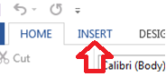
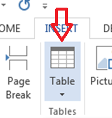
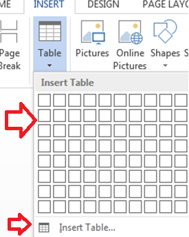

The basic steps for creating a standard table in Microsoft Word are:
1. Open a blank Word document
2. In the top ribbon, press Insert

3. Click on the Table button

4. Either use the diagram to select the number of columns and rows you need, or click Insert Table and a dialog box will appear where you can specify the number of columns and rows.

5. The blank table will now appear on the page. Alter it as necessary. Standard features like bold, italics, and underline are still available! These items may be helpful for creating headings or calling out certain items in the table.
6. Follow these instructions for ensuring your table meets APA formatting guidelines.